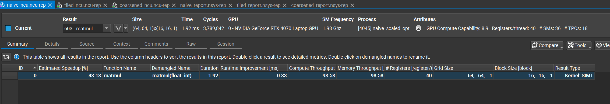
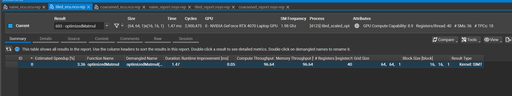
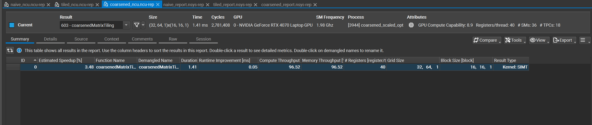

FlashAttention-2 forward and backward in Triton, an LLM.int8()-style INT8 post-training quantizer, a tiled matmul against cuBLAS, and CUDA fundamentals profiled with Nsight Compute. Every number here has the hardware it was measured on stated next to it, and the sections where my implementation loses to the production baseline are the ones I've written out in the most detail.
This is an end-to-end GPU inference stack built from first principles: the CUDA fundamentals underneath it, the Triton kernels on top of those, an attention implementation that replaces PyTorch's, and a quantizer that replaces bitsandbytes'. I wrote each piece from scratch rather than importing it because importing it teaches you the API and nothing else. Writing the FlashAttention-2 backward pass by hand is what forces you to understand why the algorithm keeps the log-sum-exp statistic around instead of the full attention matrix.
The rule I set for myself was that every component gets benchmarked against the production library it is meant to replace — cuBLAS, PyTorch SDPA, bitsandbytes — rather than against a naive version of itself. Benchmarking against your own first draft is how you generate impressive-looking numbers that mean nothing. Two of the four sections below end with my implementation losing, and those are the interesting ones.
One correction up front, because it affects the headline number and I would rather you hear it from me than find it in the source. The FlashAttention-2 benchmark as originally written counted FLOPs asymmetrically between my kernel and the baseline, which inflated my throughput by exactly 2×. Section 02 explains the mistake and reports the corrected comparison. The matmul, quantization, and CUDA sections are unaffected.
nvcc -O3 -arch=sm_89The two GPUs are never mixed. Every table below states which card it ran on.
Forward and backward, written from scratch in Triton and wrapped in a custom torch.autograd.Function so it drops into a real transformer as its attention mechanism. The forward kernel tiles Q against blocks of K and V, maintaining a running maximum and a running sum for the online softmax — each new block rescales the accumulator by exp(m_old - m_new) rather than materialising the full seq_len × seq_len attention matrix. Causal masking is applied inside the kernel at line level, combined with the padding mask, before the softmax. Inputs are fp16 with fp32 accumulation in the tl.dot calls.
The backward is the part worth writing by hand. It recomputes the attention probabilities from the saved log-sum-exp statistic instead of storing them, which is the whole memory argument for FlashAttention, and it splits into three kernels: a preprocessing pass computing the row-wise D term, a dK/dV kernel, and a dQ kernel.
Each kernel was checked against a reference PyTorch implementation on identical inputs, with torch.allclose at atol=1e-2, rtol=1e-2. All passed.
| Tensor | Max abs diff | Mean abs diff | allclose |
|---|---|---|---|
| Forward output | 0.00048828 | 0.00017583 | pass |
| Preprocess (D) | 0.02055931 | 0.00455718 | pass |
| dK | 0.00317383 | 0.00035345 | pass |
| dV | 0.00390625 | 0.00018393 | pass |
| dQ | 0.00229645 | 0.00042145 | pass |
The baseline is torch.nn.functional.scaled_dot_product_attention(Q, K, V, is_causal=True) with the backend left unpinned, so PyTorch selects its own — in practice its fused flash kernel. That is the right thing to compare against: it is what someone would actually use instead of my kernel.
Peak allocated memory tracks SDPA almost exactly across the whole range, and grows mildly with sequence length rather than quadratically. That is the central claim of FlashAttention, and it is the one my implementation demonstrably reproduces: 258.0 MB at seq_len 512, and 288.0 MB at seq_len 8192. Never materialising the seq_len × seq_len attention matrix is what buys that.
| seq_len | Triton peak MB | SDPA peak MB |
|---|---|---|
| 512 | 258.0 | 258.0 |
| 1024 | 260.0 | 260.0 |
| 2048 | 264.0 | 264.1 |
| 4096 | 272.0 | 272.1 |
| 8192 | 288.0 | 288.3 |
SDPA is faster than my kernel at long sequence lengths. The reason is that my inner loop visits every K/V block and masks the ones above the diagonal, so at long sequence lengths roughly half the work I perform is computed and then discarded. SDPA's flash backend skips those blocks entirely — causal block-skipping — which I have not implemented. That is the single largest gap between my kernel and a production one, and closing it is the next thing I would do.
My benchmark harness computed throughput for the two sides with different formulas. My kernel was credited with 4·b·h·n²·d FLOPs — the full, non-causal attention cost — while the baseline was credited with 2·b·h·n²·d, the causal cost.
Both implementations compute causal attention; my kernel applies the causal mask unconditionally and has no toggle. Crediting one side at the full rate and the other at the causal rate makes the two columns non-comparable, so the throughput numbers that harness produced do not support a claim in either direction.
A second problem sat underneath it: the percent-of-peak column divided by a constant the baseline itself exceeded, reporting 128.1% of peak at seq_len 8192. Nothing can exceed peak, so that constant was not the right ceiling for the path the baseline takes.
Rather than publish a repaired number derived from the same run, I have removed the throughput comparison until I have re-measured it with symmetric accounting. The memory table above is unaffected — it was never a function of the FLOP count.
An LLM.int8()-style outlier-aware mixed-precision matmul, written from scratch and applied to the encoder-decoder transformer above. The approach: keep a small set of activation-derived outlier channels in full precision, quantize everything else to INT8.
A calibration pass over the trained model used forward hooks to track the running maximum activation magnitude per input channel across every nn.Linear. Outlier channels were selected with a dynamic per-layer threshold — mean plus three standard deviations of per-channel activation magnitude — rather than a fixed cutoff, because activation distributions varied meaningfully across layers. The result is a dict mapping dotted module names to outlier index tensors.
QuantizedLinear splits each weight matrix into a full-precision outlier column set and an INT8 column set quantized with a per-output-neuron scale. At inference it splits the incoming activation the same way, quantizes the normal columns dynamically with a per-token scale, runs two matmuls, dequantizes the INT8 path by the product of the activation and weight scales, then sums with the outlier path and the bias.
Single-layer correctness: mean absolute error 0.0038 against output magnitudes of roughly 0.1–0.5. That is consistent with INT8 rounding, not with an implementation bug — the distinction being that a bug produces errors that scale with the input or concentrate in particular channels, and this doesn't.
| Model | Perplexity |
|---|---|
| Original | 21.8669 |
| Custom QuantizedLinear | 21.8698 |
bitsandbytes Linear8bitLt | 21.8653 |
All three within 0.02% of each other — no measurable degradation in predictive quality on this dataset.
| Model | Static footprint | Peak GPU memory |
|---|---|---|
| Original | 430.52 MB | 2534.08 MB |
| Custom QuantizedLinear | 230.77 MB (−46.4%) | 2397.27 MB (−5.4%) |
| bitsandbytes | 304.52 MB (−29.3%) | 2308.47 MB (−8.9%) |
The output projection is nn.Linear(512, 52239) — d_model 512 into the 52,239-token German vocabulary — which accounts for roughly 26.7 million parameters, a large fraction of the model. My QuantizedLinear quantizes it. In the bitsandbytes comparison, that layer was left as a regular nn.Linear and not converted to Linear8bitLt. That single exclusion is where most of the 46.4% versus 29.3% gap comes from.
I'm stating what the code does rather than why, because my own notes reference a dimensional constraint that I did not write down at the time. Rather than reconstruct a plausible-sounding reason after the fact, I'd rather leave it as an open item — see section 06.
Fifteen test sentences covering statements, questions, and varied structures, greedy decoding, run through all three variants. All fifteen identical, word for word, across original, custom-quantized, and bitsandbytes-quantized.
Two sentences — "What time is it?" and "Where is the bathroom?" — came out grammatically imperfect in all three equally. That is a base-model limitation on question structures, not a quantization effect. It shows up identically in the unquantized model, which is exactly how you tell the difference.
A hand-written tiled matmul in Triton — 2D program grid, K-loop with masked loads and tl.dot accumulation, autotuned over block sizes — benchmarked against cuBLAS via torch.matmul in true FP32, with TF32 disabled on both sides.
That disclosure is the one a reader who knows GPUs will look for first. Left on, PyTorch silently routes the cuBLAS call through the tensor cores, and the comparison stops being a comparison — my kernel runs on the FP32 CUDA cores while the baseline runs on dedicated matrix hardware, and the resulting gap tells you nothing about the kernel. With TF32 off, both paths hit the same units.
The common currency is TFLOP/s (2·M·N·K / time) rather than GB/s because matmul is compute-bound at these sizes: the question is how close to peak FP32 you get, not how close to peak bandwidth. The ceiling is the mobile 5080's ~32 TFLOP/s FP32 peak.
| Size (N³) | Triton TFLOP/s | cuBLAS TFLOP/s | Triton % peak | cuBLAS % peak |
|---|---|---|---|---|
| 512 | 8.7727.4% peak | 8.2425.7% peak | 27.4% | 25.7% |
| 1024 | 15.9549.9% peak | 16.6452.0% peak | 49.9% | 52.0% |
| 2048 | 19.3060.3% peak | 21.7868.1% peak | 60.3% | 68.1% |
| 4096 | 16.5351.7% peak | 20.3263.5% peak | 51.7% | 63.5% |
A different machine and a different question. Starting from a naive 1024×1024 matmul kernel, apply three progressive optimizations and use Nsight Compute to verify each mechanism actually fired at hardware level — not just that the wall clock moved. Correctness was verified with an all-ones input, where every output element must equal exactly 1024.0. Timing is cudaEvent around the launch only, averaged over 3 runs.
| Kernel | Time (ms) | Speedup | GFLOPs/s |
|---|---|---|---|
| Naive | 3.0045 | 1x | 714.6 |
| Tiled | 2.5589 | 1.17x | 838.9 |
| Coarsened | 2.4240 | 1.24x | 885.7 |
torch.matmul | 0.227 | 13.2x | 9457.7 |
| Kernel | Duration | Compute thpt | Memory thpt | Reg/thread | L1TEX est. speedup |
|---|---|---|---|---|---|
| Naive | 1.92 ms | 98.58% | 98.58% | 40 | 43.13% |
| Tiled | 1.47 ms | 96.64% | 96.64% | 40 | 3.36% |
| Coarsened | 1.41 ms | 96.52% | 96.52% | 40 | 3.48% |

64, 64, 1 and 40 registers/thread, both of which matter for the comparisons below.

32, 64, 1 against the previous two kernels' 64, 64, 1 — exactly the intended halving of blocks along the column dimension at COARSE_FACTOR=2, confirmed at hardware level rather than assumed from the source.torch.matmul needs a different compute path entirely (tensor cores), not a better FP32 CUDA-core kernel.Pvalue[COARSE_FACTOR] per thread instead of a scalar, so I predicted a higher register count. The compiler evidently had headroom at this factor. Worth rechecking at COARSE_FACTOR=4, where occupancy tradeoffs should actually surface.TILE_WIDTH=2, left over from 4×4 correctness testing, took 39 ms — about 15x slower than naive, because 4-thread blocks have almost no reuse to amortize and add heavy launch overhead. I'm keeping that in because it's the clearest evidence I have that I understand why the parameter matters rather than just which value to use.Stated plainly, because a list of finished things with no unfinished things next to it isn't credible.
torch.matmul. Not started.Everything is in github.com/VrajPatel105/cpp-gpu-inference. The folders that map to the sections above:
| Section | Folder |
|---|---|
| FlashAttention-2 | flash-attention/ |
| INT8 quantization | quantization/ · quantization/llm.int8()/ |
| Triton kernels | triton-kernels/ |
| CUDA / PMPP | gpu-fundamentals-pmpp/cuda/ |
| Transformer | en-de-transformer/ |
The FlashAttention correctness checks and benchmark live in flash-attention/flash_attention.py under __main__. The CUDA kernels are compiled with nvcc -O3 -arch=sm_89 and profiled with ncu --set full; the raw .ncu-rep and .nsys-rep files are committed alongside the screenshots above, so the counters can be checked rather than taken on trust.